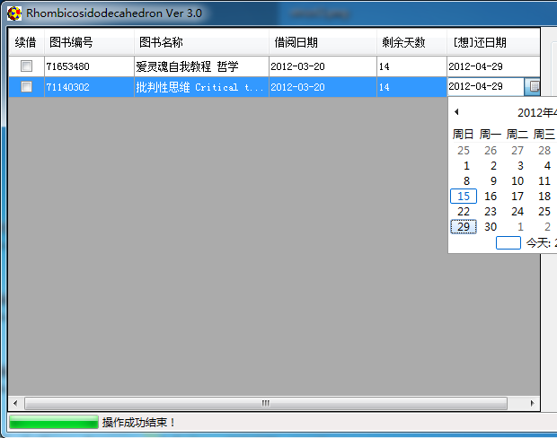
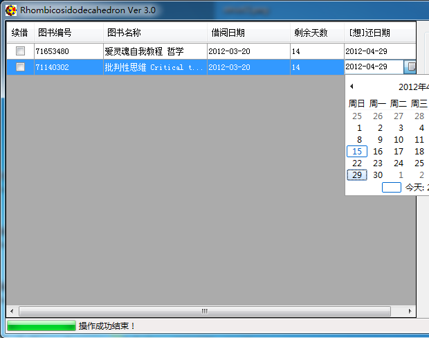

-
图书馆借阅助手
时间: since 09/11/2011
简介: 利用图书馆借阅系统的安全漏洞实现网上超期自动续借,免去人工跑图书馆的时间。
链接地址: 点我

2011年9月写的第一个版本，后来随着图书馆系统的更新，漏洞竟然越来越多，目前是第三个版本。安全漏洞居然一直没被fix掉。WTF!
时间: since 09/11/2011
简介: 利用图书馆借阅系统的安全漏洞实现网上超期自动续借,免去人工跑图书馆的时间。
链接地址: 点我

2011年9月写的第一个版本，后来随着图书馆系统的更新，漏洞竟然越来越多，目前是第三个版本。安全漏洞居然一直没被fix掉。WTF!